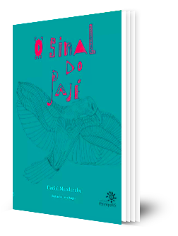
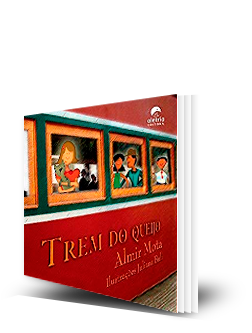
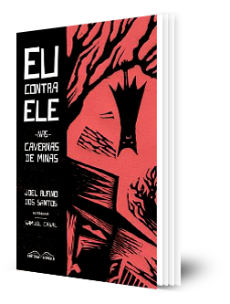

Módulos
Clique nos itens abaixo para visualizar os módulos.
Não se pode entrar em uma sala de aula com um programa de curso que não considere a especificidade dos aprendizes. É evidente que não podemos pensar em conteúdos e metodologias propostas para o ensino médio em salas de aula das séries iniciais do ensino fundamental. Do mesmo modo, não podemos desenvolver uma proposta de trabalho para a educação de jovens e adultos sem considerar primeiramente quem são os estudantes.
Uma das principais marcas da Educação de jovens e adultos em todos os lugares é a existência de uma grande diversidade de sujeitos. Vamos encontrar pessoas em uma sala de educação de jovens e adultos com diferentes idades, trajetórias profissionais e experiências pessoais. Além disso, ainda estarão presentes pessoas que por diversas razões foram privadas do direito à educação na sua infância ou adolescência. São pessoas que foram expulsas da escola devido ao preconceito, por possuírem alguma deficiência ou ainda por terem frequentado escolas que não foram capazes de atender às suas necessidades.
Com isso, muitos professores precisam se perguntar como definir propostas de trabalho em sala de aula para conjuntos tão diversos. Deve-se considerar também que jovens e adultos não aprendem do mesmo modo que uma criança e, assim, a escola de EJA deve estar preparada para colocar em prática um currículo específico para as necessidades de aprendizagens de seus sujeitos, tornando-se cada vez mais autônoma dos modelos definidos para crianças e adolescentes.
Ainda com relação à diversidade, vale analisarmos a questão específica da diversidade etária. Na rede municipal de São Paulo, em 2016, por exemplo, a diversidade etária estava presente de diferentes modos, níveis e formas de atendimento.

Mas quando nos referimos às turmas de alfabetização, evidencia-se que 33% tinham 50 anos ou mais e apenas 9% tinham entre 15 e 29 anos, ou seja, existem mais alunos de maior idade nas séries iniciais da EJA e mais alunos jovens nas séries finais do ensino fundamental e ensino médio. Os dados indicam a diversidade etária presente até mesmo dentro das diferentes etapas, ampliando ainda mais o desafio de se pensar a EJA como um currículo que precisa considerar a diversidade.
Para lidar com essa diversidade, é necessário criar uma escola original, criativa e, principalmente, adequada aos tempos e condições de vida de diferentes jovens e adultos. O material didático, o espaço da sala de aula, a estratégia, as propostas de trabalho, nada deve ser igual ao que se faz com as crianças. Precisamos nos colocar o desafio de criar uma outra escola onde jovens e adultos se sintam protagonistas de sua aprendizagem e não pessoas envergonhadas e culpadas por não terem concluído os estudos na chamada “idade própria”. Não podemos esquecer que estudar é um direito do sujeito em qualquer momento da vida.
No que se refere ao desenvolvimento das propostas de aula, é necessário ter sensibilidade e capacidade de descobrir o que pode fazer sentido para este grupo de sujeitos ou ainda saber como as diferentes trajetórias e experiências de vida desses pode contribuir para que os conhecimentos escolares possam ser desenvolvidos em sala de aula fazendo sentido para todos e todas.
Para tanto, torna-se necessário fazer uma seleção de temas e conceitos a serem trabalhados que, mais uma vez, não segue a mesma trajetória proposta para crianças. Um adulto precisa aprender aquilo que fizer sentido para sua melhor participação na vida social, seja para avançar nos estudos, no trabalho ou nas tarefas da vida social que exigem o uso de uma cultura letrada.
Outro elemento central, mas muitas vezes esquecido, da especificidade da educação de jovens e adultos é a experiência negativa que a escola representa na maioria das trajetórias escolares vividas por esses sujeitos. Grande parte deles foram em algum momento expulsos da escola, seja porque foram reprovados sucessivas vezes, para trabalhar, pela gravidez, por preconceito ou pela simples ausência da escola. Sofrem com o estigma de terem abandonado a escola, que aquilo não deu certo para ele. Assim, voltar para a escola quando adulto é ter de reviver o que já não deu certo, que é uma relação traumática. Dessa forma, quando consegue voltar, logo que alguma dificuldade ocorre, é comum ver estes alunos abandonarem mais uma vez a escola.
Para que isto não ocorra é essencial ter como premissa de uma escola de educação de adultos o acolhimento. Professores e gestores de uma escola de adultos têm que estar preparados para receber alunos diversos e também pessoas para quem a escola foi traumática no passado. Nesse sentido, é preciso pensar em estratégias que devolvam a este sujeito o prazer de aprender, mostrando que ele tem capacidade para seguir adiante.
Leitura para discussão:
CATELLI Jr, Roberto; ESCOURA, Michele et al. Proposições de organização curricular na educação de jovens e adultos. Cadernos Cenpec, São Paulo, v.3, n.2, p.162-186, jun. 2013.
Aperte o play e escute o áudio sobre...


Clique nos botões abaixo para saber qual a diversidade etária em seu estado.
Como observamos no vídeo, mesmo sem recorrer a aprendizados valorizados na trajetória escolar, as pessoas que possuem menor escolaridade desenvolvem aprendizagens com base nas suas experiências profissionais e pessoais ao longo da sua trajetória de vida. Nesse sentido, pode-se afirmar que são possuidoras de saberes diversos que podem também estar ancorados nas tradições familiares e da própria comunidade. Podemos definir que existe uma aprendizagem que se dá por meio da escola e outro que ocorre com base na experiência.
Assim, quando estas pessoas retomam os estudos, é fundamental reconhecer que estamos lidando com pessoas que possuem ricos conhecimentos que precisam ser considerados para o desenvolvimento de um trabalho escolar nas várias áreas do conhecimento. Por quê?
A pesquisadora portuguesa Carmen Cavaco, explica que:
 A reduzida participação dos adultos na modalidade de educação formal contribui para fortalecer a hipótese de que “[...] as actividades quotidianas do trabalho, lazer e vida social apesar de não terem propriamente uma finalidade educativa explícita são fontes de aprendizagem” (Pain, 1990), experiencial muito importantes, caso contrário as pessoas não estariam em condições de fazer face às exigências sociais, profissionais e familiares. (...) Aprende-se por ensaio e erro, repetição e imitação. (...) Para algumas dessas pessoas a formação experiencial é a única via de acesso ao conhecimento e a experiência é transformada no instrumento mais importante de sobrevivência e de acção. Ou seja, a experiência é fundamental na aprendizagem de todos, mas ocupa um lugar ainda mais relevante, tornando-se mesmo imprescindível, junto das pessoas que, por diversas razões, registaram dificuldades ou impossibilidade de acesso à educação formal. A formação experiencial funciona nestes casos de uma forma compensatória, sabendo-se que “[...] os adultos que têm fortes lacunas escolares, dispõem, por vezes, de experiências profissionais e sociais muito ricas” (Dominicé, 1989, p. 64). A situação excepcional em que vivem os adultos não escolarizados leva-nos a dizer que constituem sujeitos privilegiados para o estudo da formação experiencial, pois os saberes que possuem são unicamente resultantes da sua experiência de vida. P.956-957
A reduzida participação dos adultos na modalidade de educação formal contribui para fortalecer a hipótese de que “[...] as actividades quotidianas do trabalho, lazer e vida social apesar de não terem propriamente uma finalidade educativa explícita são fontes de aprendizagem” (Pain, 1990), experiencial muito importantes, caso contrário as pessoas não estariam em condições de fazer face às exigências sociais, profissionais e familiares. (...) Aprende-se por ensaio e erro, repetição e imitação. (...) Para algumas dessas pessoas a formação experiencial é a única via de acesso ao conhecimento e a experiência é transformada no instrumento mais importante de sobrevivência e de acção. Ou seja, a experiência é fundamental na aprendizagem de todos, mas ocupa um lugar ainda mais relevante, tornando-se mesmo imprescindível, junto das pessoas que, por diversas razões, registaram dificuldades ou impossibilidade de acesso à educação formal. A formação experiencial funciona nestes casos de uma forma compensatória, sabendo-se que “[...] os adultos que têm fortes lacunas escolares, dispõem, por vezes, de experiências profissionais e sociais muito ricas” (Dominicé, 1989, p. 64). A situação excepcional em que vivem os adultos não escolarizados leva-nos a dizer que constituem sujeitos privilegiados para o estudo da formação experiencial, pois os saberes que possuem são unicamente resultantes da sua experiência de vida. P.956-957
A autora entrevistou um conjunto de pessoas adultas não escolarizadas e concluiu que apesar de não terem ido à escola tinham adquirido vários conhecimentos no âmbito familiar e profissional. Muitos sabiam ler e escrever, conheciam números, sabiam ler gráficos, fazer cálculo mental e até mesmo conversação básica em língua estrangeira. Conforme ela:
Os adultos entrevistados apresentam um conjunto de saberes que são essenciais para assegurar a sua autonomia na vida quotidiana. Entre estes saberes destacam-se: situar-se no tempo de modo a identificar os dias, os meses do ano, as estações, embora não o façam através da interpretação do calendário, telefonar, ver as horas, usar os electrodomésticos, interpretar as facturas da electricidade e do telefone, conduzir, usar o dinheiro em Portugal e estrangeiro, fazer câmbios. O cálculo mental é um saber apresentado por todos os entrevistados, domínio onde não chegou a ocorrer regressão ao longo do tempo, o que se deve ao uso frequente deste saber no seu dia-a-dia. Os adultos revelaram uma grande capacidade de cálculo mental e, em alguns casos, uma rapidez notável na realização de contas. Através do seu discurso percebe-se a importância que atribuíram desde crianças à realização do cálculo mental, o que está, em grande medida, associado a um domínio da vida directamente ligado à sobrevivência.
Ao concluir a pesquisa, Cavaco afirma que:
Os adultos não escolarizados, contrariamente, ao que habitualmente se divulga são possuidores de uma grande diversidade de saberes e apresentam uma enorme capacidade de aprendizagem, o que é fundamental para a sua vida em sociedade.
CAVACO, Carmen. Formação Experiencial de Adultos Não Escolarizados: saberes e contextos de aprendizagem. Educação & Realidade, Porto Alegre, v. 41, n. 3, p. 951-967, jul./set. 2016.
O artigo resultou de uma investigação qualitativa, baseada em entrevistas biográficas, que teve como objetivo analisar o processo de formação de adultos não escolarizados com base na experiência. Analisa o modo como estes adultos se formaram ao longo da vida, o que aprenderam, que contextos e pessoas são significativos nessa aprendizagem. Seguindo um referencial teórico baseado na formação experiencial e nas histórias de vida, entende-se que a formação é um processo muito amplo, que se confunde com a experiência de vida. Verificou-se que os adultos não escolarizados possuem saberes diversificados, que resultaram de processos de formação experiencial, em todos os tempos e espaços da sua vida.
Aperte o play e escute o áudio sobre...
O saber obtido pela experiência na sala de aula de EJA
Utilizar os saberes aprendidos pela experiência em sala de aula é uma forma de valorizar os conhecimentos que os estudantes já possuem, que não podem ser negados ou desconsiderados. Além disso, é possível articular o saber escolar ao saber obtido por meio da experiência. Nesse sentido, devemos fazer uso dos conhecimentos prévios dos educandos para fortalecer as aprendizagens escolares e ampliar aquelas que estão fundadas na experiência. Exemplo disso é o uso de extratos bancários, interpretação de contas de luz, uso de moedas, análise de preços e outros elementos da vida cotidiana no ensino da matemática.
Ao planejar as aulas, o professor da EJA precisa aliar os saberes que os alunos manifestam aos saberes escolares numa tentativa de provocar os alunos a pensar em possíveis relações entre tais saberes”.
Felipe Alves Machado
Jackson Rodrigo Soares
Michele R. Dias Veronez
Suelen Cristina Richeski
Exemplos de atividades que articulam os conhecimentos obtidos por meio da experiência com conhecimentos escolares
O saber obtido pela experiência na sala de aula de EJA
Conforme a Pesquisa Nacional por Amostra de Domicílios (PNAD), em 2017, o Brasil tinha 7% de sua população de 15 anos ou mais na condição de analfabeta. O maior percentual de analfabetismo ocorre no Nordeste, registrado em 19,3%. Na faixa etária de 60 anos ou mais, o índice nessa região alcança 38,6%.
Além disso, apenas 46,1% das pessoas com 25 anos ou mais concluíram o ensino médio no Brasil. Destaca-se também que 33,8% dos brasileiros dessa faixa etária não completaram o ensino fundamental.
Com isso, podemos afirmar que vivemos em um país que mantém uma grande dívida social com a população, com o maior número absoluto de analfabetos da América Latina e grande parte da sua população sem nem mesmo ter completado o ensino fundamental.


Fonte: IBGE, Diretoria de Pesquisas, Coordenação de Trabalho e Rendimento, Pesquisa Nacional por Amostra de Domicílios Contínua 2016-2017. (1) Variação não significativa ao nível de confiança de 95%.
Um estudo produzido pela Ação Educativa em parceria com o Instituto Paulo Montenegro, o Indicador de Alfabetismo Funcional (INAF), vem desde 2001 analisando o nível de alfabetismo dos brasileiros. A proposta é medir o quanto os brasileiros de 15 a 64 anos conseguem fazer uso da leitura, da escrita e dos problemas matemáticos para resolver problemas relacionados à vida cotidiana.
Os resultados obtidos entre 2001 e 2018 mostram que 30% da população brasileira pode ser classificada como analfabeta funcional conforme a metodologia do INAF que aplica um teste cognitivo com 32 questões, para uma amostra de 2002 pessoas nas diferentes regiões do país. Ser analfabeto funcional significa para o INAF estar classificado em uma escala de cinco níveis nos seus dois níveis inferiores, o que significa que esta pessoa consegue até reconhecer letras, números, palavras e realizar algumas tarefas cotidianas fazendo uso da leitura e da escrita, mas de uma forma muito limitada.
Nível de alfabetismo da população brasileira de 15 a 64 anos. INAF, 2001 – 2018
Este conjunto de dados revela o grande desafio de fazer com que jovens e adultos no Brasil possam usar a leitura para resolver problemas do seu cotidiano e ampliar sua participação na sociedade. Com isso, consideramos que desenvolver atividades de leitura na escola e na comunidade é essencial para que os brasileiros possam fazer novas descobertas e ampliar sua capacidade de participação na vida social.
Leituras para jovens e adultos
A formação de leitores autônomos envolve desafios tanto do âmbito do acesso a acervos diversificados quanto do desenvolvimento de habilidades leitoras. Reafirmar a especificidade da EJA é essencial para combatermos a transposição pura e simples de práticas da educação infantil e da escola para crianças e jovens para o âmbito da educação de pessoas jovens e adultas.
A visão positiva da diversidade que caracteriza a EJA é o ponto de partida para o desenvolvimento de práticas pedagógicas que considerem a especificidade do processo de ensino e aprendizagem na modalidade e potencialmente transformadoras das trajetórias escolares dos estudantes.
Considerando a diversidade etária, étnico-racial, de origem, de gênero, de orientação sexual, religiosa, linguística e cultural presente nas salas de EJA propomos o deslocamento do trabalho focado nas carências facilmente observáveis no domínio das habilidades leitoras para o desafio de construir caminhos que levem a emergir as diferentes experiências e visões de mundo que habitam as salas de EJA.
Intencionalidade educativa e disponibilidade dos professores a novos aprendizados são elementos essenciais para que as diferentes identidades e experiências presentes na sala de aula emerjam e sejam identificadas vias para a construção de processos de ensino comprometidos com a valorização de experiências concretas e potencialmente transformadoras do fazer pedagógico em todas as suas dimensões.
Uma formação leitora baseada no diálogo entre o universo de conhecimentos presentes na sala de aula sugere aposta na oralidade, leitura de imagem e outras ações que propiciam acesso a saberes identificáveis através do diálogo.
Roda de leitura na EJA
Uma das experiências bem-sucedidas de desenvolvimento de um trabalho de leitura na EJA são as rodas de leitura, também chamados de círculos de leitura, ou ainda, como ficou conhecida a experiência de uma escola catalã, as tertúlias literárias.
No caso espanhol, na escola de adultos chamada La Verneda, a tertúlia literária é uma proposta em que jovens e adultos de diferentes idades e níveis de leitura se reúnem para viver uma experiência semanal de duas horas discutindo grandes autores da literatura. A proposta é que se realize um diálogo igualitário, no qual todas as opiniões têm o mesmo valor, independente da escolaridade e do título acadêmico de cada um. Cada um dos integrantes da tertúlia leva o livro escolhido para ler e para casa. Sua tarefa é ler e escolher um pequeno trecho que tenha gostado para compartilhar com os colegas da tertúlia. A partir daí se estabelece o diálogo que pode levar para diversos caminhos conforme a dinâmica estabelecida pelo próprio grupo. A leitura pode sugerir debates sobre temas diversos relacionados à comunidade ou a problemas da vida social ou cotidiana. Por fim, devem chegar a uma interpretação coletiva da leitura sem ter que chegar a uma interpretação academicamente mais correta ou disseminada daquela leitura. Este é o sentido do conhecimento dialógico, que se produz com base no diálogo horizontal entre os participantes.
Considerando a diversidade etária, étnico-racial, de origem, de gênero, de orientação sexual, religiosa, linguística e cultural presente nas salas de EJA propomos o deslocamento do trabalho focado nas carências facilmente observáveis no domínio das habilidades leitoras para o desafio de construir caminhos que levem a emergir as diferentes experiências e visões de mundo que habitam as salas de EJA.
Intencionalidade educativa e disponibilidade dos professores a novos aprendizados são elementos essenciais para que as diferentes identidades e experiências presentes na sala de aula emerjam e sejam identificadas vias para a construção de processos de ensino comprometidos com a valorização de experiências concretas e potencialmente transformadoras do fazer pedagógico em todas as suas dimensões.
Conhecendo mais sobre Tertúlias dialógicas
NIASE – Núcleo de Investigação e Ação Social e Educativa.
Marigo, Adriana; Mello, Roseli; Amorim, Sabrina. Tertúlia literária dialógica e educação de pessoas jovens e adultas: encontro entre literatura e vida. Leitura: Teoria & Prática (suplemento), n.58, jun.2012, p. 1497-1505.
FLECHA, Ramon. Compartiendo palabras: el aprendizaje de las personas adultas a traves del dialogo. Barcelona: Paidos, 1997. Escola La Verneda: tertúlias literárias dialógicas.
Indicações de leitura na EJA
O SINAL DO PAJÉ Texto: Daniel Munduruku Editora Peirópolis
O escritor Daniel Munduruku Monteiro Costa (Belém/PA, 1964) é filósofo, historiador e psicólogo. Faz parte da nação indígena Munduruku. Para ele, escrever é uma forma de se manter ligado à cultura da aldeia que deixou no Pará, da qual saiu por curiosidade e vontade de descortinar novos horizontes. "Escrevo para me manter índio", diz o autor. Sem se distanciar de suas raízes, tornou-se educador social e criou um jeito de ensinar que inclui a tradição indígena de contar histórias.
Em linguagem cuidadosa e com belas ilustrações, o livro aborda o tema das escolhas e favorece a discussão das questões indígenas e do multiculturalismo.
O sinal do pajé é uma obra representativa da literatura indígena, importante por apresentar a cultura indígena pelo olhar de um de seus membros e por ressaltar questões como tolerância, respeito e diálogo entre as culturas.
Por meio de sua narrativa, o autor pretende ajudar o jovem brasileiro, não importando o grupo étnico a que pertença, a pensar nos conflitos que afligem as pessoas quando precisam optar entre dois ou mais sonhos na vida.
Antes da leitura
Junto dos alunos, inspecione o livro, observando:
- as orelhas;
- a ficha catalográfica;
- o nome do autor;
- o nome da ilustradora;
- o nome da editora e o ano da edição.
Em seguida, apresente e leia para a turma:
- a dedicatória;
- a nota do autor;
- o trecho de texto (epígrafe) que abre o livro;
- os títulos dos capítulos que compõem o sumário;
- quem são Taísa Borges e Daniel Munduruku;
- o posfácio (p. 52).
Importante: no posfácio, o autor apresenta a obra, explicando por que escolheu como tema o conflito gerado quando temos de fazer escolhas. E convida o leitor a responder a um jovem indígena que vive essa angústia: “Quem sabe a resposta do leitor possa ajudar outros jovens, que estão vivendo o conflito, a encontrar uma solução”.
Peça aos alunos para acompanhar a leitura da história feita pelo professor e, depois das discussões, para que escrevam, em duplas, a resposta a esse jovem. Para os alunos que ainda não dominam a escrita, proponha a elaboração coletiva da resposta.
Durante a leitura
Estabeleça um cronograma de leitura e quanto será lido por dia. Faça a leitura colaborativa (compartilhada) do livro, tanto para o 1º como para o 2º segmentos.
A leitura colaborativa é uma atividade em que o professor lê um texto com a classe e, durante a leitura, questiona os alunos sobre os índices linguísticos que dão sustentação aos sentidos que eles estão atribuindo ao texto.
É uma excelente estratégia didática para o trabalho de formação de leitores, principalmente para o tratamento dos textos que se distanciem muito do nível de autonomia dos alunos. Ensina o aluno como se lê um texto.
Importante: antes da leitura de cada página, apresente a ilustração correspondente. Observe com a classe os desenhos, as linhas, as cores, os grafismos. Inclua a capa na investigação. A ilustração é mais um elemento que atribui sentido ao texto.
Depois da leitura
Faça com a turma uma roda de discussão sobre a temática da narrativa. Comente que os elementos da discussão servirão de base para a resposta a ser escrita para um jovem indígena e enviada à editora Peirópolis, conforme o combinado anterior ao início da leitura.
Avaliação
Avalie a compreensão da narrativa em todos os momentos das atividades. São várias as oportunidades para você constatar se o aluno está compreendendo a história ou, se ele está com alguma dificuldade, qual o tipo de dificuldade apresentada. São informações importantes para você saber como dosar as intervenções e estimular para melhor cada vez mais o nível de compreensão leitora dos alunos.
Para saber mais
Mundurukando – Blog do Daniel Munduruku.
 O QUE DIZEM AS PALAVRAS
Texto e ilustrações: Nani
Editora Lê
O QUE DIZEM AS PALAVRAS
Texto e ilustrações: Nani
Editora Lê
Com muito humor, Nani desperta para a escrita e a apresenta como um jogo criativo, provocando o leitor a desvendar o que está por trás das palavras.
Excelente livro para todas as idades, mas pode ser mais bem aproveitado com leitores iniciantes adultos. Ajuda a desenvolver a capacidade de compreensão desse perfil de leitor porque, se de um lado ele precisa apenas decodificar a única palavra de cada quadro, do outro, a compreensão do significado exige esforço de interpretação das metáforas. Palavra e imagem precisam ser “lidas”, pois o significado de uma se completa no significado da outra. Cada página traz duas palavras ilustradas, em ordem alfabética, tais como: censura, fracasso, opressão, pacto e sigilo. Palavras que não costumam fazer parte do vocabulário cotidiano de neoleitores, mas que são carregadas de sentido e podem ajudá-los a compreender outros textos.
Atividades sugeridas
- Ler para a classe e comentar o texto de abertura do livro, em que o autor fala sobre o que as palavras podem fazer: conversar, elogiar, xingar, descrever etc. O objetivo é provocar uma reflexão sobre o valor e o poder das palavras.
- Comentar sobre o autor e seu trabalho como cartunista.
- Propor que os alunos, em duplas, escolham duas palavras do livro para ler e interpretar o sentido, relacionando-as às respectivas imagens. Depois de cada dupla expor sua interpretação para os colegas, estimular todos a comentar as interpretações apresentadas, concordando, discordando e acrescentando comentários.
- Propor aos alunos que escolham uma palavra, diferente das apresentadas no livro, e brinquem visualmente com os sentidos que ela suscita, assim como faz o autor em seu livro. Os desenhos produzidos podem ser expostos no mural da sala ou da escola. Outra possibilidade é elaborar um livro com as produções dos alunos.
TREM DO QUEIJO Texto: Almir Mota Ilustrações: Juliana Buli
Aletria EditoraO escritor cearense Almir Mota faz um passeio pela cultura de Minas Gerais. O livro conta a história de um trem que transportava queijo. É uma viagem pelo imaginário popular que leva o leitor a conhecer as estações ferroviárias, os passageiros e as paisagens dos caminhos percorridos pelo trenzinho.
Antes da leitura
- Apresente o livro para a classe. Fale do autor e da ilustradora (p. 26).
- Mostre as ilustrações, página por página. Peça aos alunos para prestar atenção nos desenhos, descrevendo o que veem.
- Reapresente as imagens. Sugira a criação de uma história oral para as ilustrações. Dê tempo para que elaborem.
- Peça que contem para a classe a história criada. Estimule todos a falar. Dê atenção especial aos mais inibidos.
Durante a leitura
Para favorecer a percepção fonética dos leitores iniciantes, leia em voz alta para a classe. No caso de leitores autônomos, peça que leiam em voz alta duas páginas. Faça comentários durante a leitura.
Depois da leitura
- Prepare questões para ampliar a compreensão do que foi lido e promova uma roda de conversa;
- Sugestões de encaminhamentos para a roda de conversa:
- que aspectos da cultura e da linguagem de Minas Gerais estão presentes na história?
- quais são suas lembranças de boas viagens? Em que tipo de transporte foram feitas? Alguma foi de trem?
- alguma ilustração do livro remete a alguma lembrança? Conte sobre isso.
- leia a frase da p. 22: “Carolina nem é mais menina”. A ilustração revela isso? De que modo?
- o que se escreve na frente do envelope de uma carta que se quer enviar pelo correio? Se você fosse colocar o envelope da p. 22 no correio, que mudanças faria no que está escrito?
- uma ilustração não é apenas um recurso para deixar a página de um livro mais bonita para os olhos. A boa ilustração não é um apêndice. Ela compõe com o texto uma unidade de significação. Para favorecer a observação das ilustrações, tente saber qual o leitor achou mais significativa e por qual motivo.
Outras linguagens
O trem é um tema muito presente no imaginário brasileiro. Artistas em geral – poetas, músicos, pintores – costumam abordá-lo em seus trabalhos. Amplie a proposta, apresentando nas aulas esse tema em outras linguagens. Seguem algumas sugestões.
O trenzinho do caipira1, quarto movimento da composição Bachianas brasileiras nº 2, do maestro Heitor Villa-Lobos (1887-1959), caracteriza-se por simular os sons de uma locomotiva com os instrumentos da orquestra. Em 1975, como parte da obra Poema sujo, Ferreira Gullar (1930) indicou que seus versos (ver abaixo) eram para ser cantados com a música de Villa-Lobos:
[...]
lá vai o trem com o menino
lá vai a vida a rodar
lá vai ciranda e destino
cidade e noite a girar
lá vai o trem sem destino
pro dia novo encontrar
correndo vai pela terra
vai pela serra
vai pelo mar
cantando pela serra do luar
correndo entre as estrelas a voar
no ar
[...]
GULLAR, Ferreira. Poema sujo. 16. ed.
Rio de Janeiro: José Olympio, 2014. p. 46.
Para saber mais
O compositor e cantor carioca Edu Lobo foi o primeiro a gravar “O trenzinho do caipira”, em 1977, no álbum Camaleão, com o fragmento do poema de Ferreira Gullar incluído como letra para a melodia de Bachianas brasileiras nº 2, de Heitor Villa-Lobos. Para ouvir o áudio clique aqui.
“Trem de Alagoas”, poema do pernambucano Ascenso Ferreira (1895-1965).
“Trem de ferro”, poema do pernambucano Manuel Bandeira (1886-1968).
“Segunda classe”, de Tarsila do Amaral, 1933. Óleo sobre tela.
 A CONTRADIÇÃO HUMANA
Texto e ilustrações: Afonso Cruz
Editora Peirópolis
A CONTRADIÇÃO HUMANA
Texto e ilustrações: Afonso Cruz
Editora Peirópolis
De modo aparentemente inocente, o autor elabora uma crítica aos nossos comportamentos mais comuns. Com fino humor, as imagens e o texto de Afonso Cruz levam o leitor a tomar consciência das contradições expressadas nas atitudes humanas e nas relações interpessoais. A obra é também uma contribuição para o desenvolvimento da consciência ecológica, não só pelo questionamento da relação do ser humano com o meio natural, mas de nossa relação com o meio social.
Antes da leitura
Como é uma obra rica em imagens e recursos gráficos, é importante explorá-la cuidadosamente desde a capa. Isso vai ajudar o aluno a desenvolver capacidades interpretativas. Nada ali está por acaso. Então peça para que sejam observadas as cores, as linhas, os tipos de letras, os desenhos etc. Explique que imagem e texto compõem uma unidade – uma não pode ser compreendida sem o outro, e vice-versa. Promova um debate sobre as impressões colhidas.
Durante a leitura
Apresente o narrador do livro, que é um menino. Solicite aos alunos que encontrem no texto a confirmação para essa afirmação. Reitere que tanto as frases como as ilustrações devem ser observadas.
Faça a leitura compartilhada da obra, promovendo pausas a cada nova contradição mencionada. Converse com a turma sobre elas.
Depois da leitura
Produção textual com ilustração
Em duplas, peça aos alunos que imitem o autor, criando e ilustrando uma narrativa que aborde alguma contradição humana não citada no livro. Na ilustração, sugira que sejam usadas letras de diferentes tipos e cores, escrita cursiva e de imprensa, desenhos ou colagem de figuras humanas, de bichos, de espaços e de objetos. Para essa aula, providencie lápis de cor, papel sulfite, tesoura, cola, revistas velhas para recorte e retalhos de tecido. Deixe tudo à disposição da classe.
Mural
Ajude-os a organizar uma exposição na própria sala de aula ou no pátio ou em espaços disponíveis da escola.
 FIEL
Texto: Jessé Andarilho
Editora Objetiva
FIEL
Texto: Jessé Andarilho
Editora Objetiva
Antes da leitura
- Leia o livro, observando suas próprias reações como leitor. Considere-as quando for trabalhá-lo com os alunos.
- Converse com a classe sobre a temática do livro. Prepare-se para essa conversa: “Como abordarei a temática do envolvimento de um jovem de 16 anos com o tráfico de drogas na favela onde nasceu?”.
- Discuta com a turma o que é ser um jovem de 16 anos hoje, do ponto de vista físico, social (formas de lazer; relacionamentos com amigos, família, amorosos), psicológico (as inseguranças e os medos), humano (gostos, sonhos, desejos, aspirações etc.).
- Sensibilize a classe para a leitura do livro. Provoque a curiosidade do leitor, lançando a seguinte pergunta: “Como será a história do personagem Felipe, de 16 anos, bom estudante, habilidoso jogador de futebol, filho de pais trabalhadores, morador de uma favela na cidade do Rio de Janeiro?”.
- Depois da conversa, conte quem é o autor e como ele escreveu o livro. Essas informações estão nas orelhas e nas últimas páginas, na seção “Agradecimentos”.
Durante a leitura
Decida como será feita a leitura – a escolha deverá se basear no nível da turma –, se ela será colaborativa ou autônoma, com momentos de leitura em voz alta, se deverá ser preparada anteriormente pelo professor e/ou pelo aluno.
Importante: As decisões precisam considerar o tempo disponível. É desejável que os alunos façam a leitura integral do livro.
Depois da leitura
1. Atividade oral – Promover uma roda de discussão
Enquanto metade da classe prepara perguntas de compreensão da história, uma por aluno, a outra metade responde. Depois as funções são trocadas. A intenção não é perceber erros e acertos, mas provocar uma discussão entre todos. O professor também prepara perguntas.
2. Produção escrita
Propor aos alunos que:
- a) continuem a história – Por exemplo, respondendo à pergunta: “O que aconteceu com Felipe depois que foi salvo por Bananada?” Esse final pode ser elaborado na classe, em duplas;
- b) deem títulos aos capítulos – Atividade que ajuda o professor a observar o nível de compreensão da leitura. Para atribuir um título, é preciso que o capítulo tenha sido compreendido;
- c) elaborem uma reflexão escrita, respondendo às perguntas: “O que a leitura desse livro significou para você?”; “O que você compreendeu da história?”; “Quais sentimentos a leitura provocou?”.
3. Combine com a turma que os diferentes finais da história, os títulos atribuídos aos capítulos e a reflexão escrita serão publicados no CADERNO DE MEMÓRIAS DIGITAL.
Avaliação
Como o objetivo é promover a leitura do livro Fiel, avalie se houve compreensão da história e em que nível, tomando por base as rodas de discussão e as atividades escritas.
 COLECIONADOR DE PEDRAS
Texto: Sérgio Vaz
Global Editora
COLECIONADOR DE PEDRAS
Texto: Sérgio Vaz
Global Editora
Sérgio Vaz nasceu em Ladainha (MG), no ano de 1964. Vive em Taboão da Serra (SP) desde criança. É cocriador de um dos principais espaços de encontro entre a poesia e a literatura, os saraus da Cooperifa. Autointitula-se poeta da periferia. A vida na periferia de São Paulo, aliás, inspirou os poemas reunidos em Colecionador de pedras. Sua visão do fazer poético é bastante democrática: ”Poeta panfletário e semianalfabeto creio que literatura é para todos. Se não é, deveria ser.”
Antes da leitura
Poeta da chamada literatura periférica, denominação atribuída à literatura feita nas bordas da metrópole, o percurso literário de Sérgio Vaz merece ser conhecido. Esse percurso pode ser inspirador para alunos leitores iniciantes.
Para sensibilizar os estudantes a ler os poemas do livro Colecionador de pedras, conte-lhes a história do autor, o que ele pensa e o que escreve. Leia e comente para a turma trechos de entrevista feita por Éder Fonseca com Sérgio Vaz, publicada no portal Panorama Mercantil1:
Em sua poesia, Sérgio Vaz fala das pessoas com quem vive, do que observa, do que o entristece, dos que são negros e pobres, dos que moram na periferia, dos que são parecidos com ele; mas também fala da violência contra mulheres, mesmo sem ser mulher, e da violência contra o índio, mesmo sem ser índio. Fala de amor, de alegria, de amizade, de sonhos possíveis e impossíveis.
“Nossa Poesia nasce das ruas violentas, da saúde precária, do ensino de má qualidade, do racismo, do preconceito de classe, do desemprego, das mazelas sociais etc. Dessa literatura que denuncia o que se sofre na pele. Dessa literatura das letras descalças, mas de pés firmes e calejados que não descansam nunca. Dessa literatura que sangra na página e umedece de lágrimas. Dessa literatura órfã de pai e mãe, dessas letras mal dormidas, dessa palavra torta e mira certa, que falta trigo na hora do pão.
Dessa poesia que apanha na cara, e não dá a outra face. Desse verso maltrapilho que dorme nas calçadas, mas não pede esmola. Da rima pobre, que por dignidade não pede dinheiro emprestado nem compra fiado. A Literatura que fala dessa vida desgramática que dói mesmo quando a gente parece que está feliz.
Ah, mas vão dizer, como disseram outro dia: ‘E quando tudo isso acabar, a fome, a miséria, o racismo, a violência, enfim, vocês vão escrever sobre o quê?’ Eu vou escrever um livro chamado Que mundo maravilhoso. É disso que a Literatura de periferia fala, da luta e da busca de um mundo maravilhoso para todos nós.
Não importa se com menos ou mais crase, com menos ou mais vírgulas. Essa literatura não se mede pela pontuação, métrica ou estética, ainda que tudo isso tenha sua serventia, mas pela postura de suas linhas e entrelinhas. Nesse caso, se tiver nobreza nos atos e não tiver pobreza no coração, pode escrever essa literatura.
O escritor é aquele que desce até o inferno para que o leitor, esse ser ingrato e inconstante, ande como um anjo pela dor alheia. Escrever é se matar um pouco todo dia na presença de algumas testemunhas que muitas vezes assistem a tudo, mas não podem fazer nada. Ainda que não saiba, escrever é a minha vida.”
NA FUNDAÇÃO CASA...3
— Quem gosta de poesia?
— Ninguém senhor.
Aí recitei “Negro drama” dos Racionais.
— Senhor, isso é poesia?
— É.
— Então nóis gosta.
É isso. Todo mundo gosta de poesia.
Só não sabe que gosta.
Durante a leitura
Alguns poemas, para ser mais bem apreciados, devem ser ditos em voz alta, lidos ou declamados de cor pelo leitor para si mesmo ou para outras pessoas. Uma característica fundamental da literatura da periferia é a oralidade.
Professor(a), comece por você.
Com antecedência, escolha no livro um poema que o tenha emocionado. Decore ou leia para a classe. Explique para a turma a razão de sua escolha.
Em outro momento, proponha aos alunos que façam o mesmo. A atividade vai criar a necessidade de uma leitura anterior atenta.
Depois da leitura
Organização de um sarau
Sérgio Vaz é um dos criadores do Sarau da Cooperifa. Tomando isso como referência, organize um sarau com seus alunos, semelhante aos saraus que você conhece. Explique para a classe o que é um sarau – tipo de reunião artística muito disseminada nos salões das elites parisienses no século XIX. Chegou ao Brasil em 1808, com a família real, e seguia os moldes dos salões franceses. Fora de moda há muitos anos, o sarau ressurgiu com os poetas da Cooperifa, em 2001. Nos saraus franceses e brasileiros de outros tempos, eram declamadas poesias da Arcádia, do Romantismo, versos parnasianos. Hoje são declamados poemas de autoria dos próprios frequentadores dos saraus, letras de canções e muitos RAPs que abordam a realidade das periferias ou das localidades em que o evento acontece.
Combine uma data para o sarau acontecer. Para esse dia, cada aluno escolhe um poema para ler ou declamar para os colegas.
Na apresentação da entrevista publicada no portal Panorama Mercantil, a mesma citada anteriormente, assim foi definido o sarau da Cooperifa:
Lá (no sarau) você pode chegar e falar seu poema, mas é necessário sentar e ouvir o do outro. E se você bater palma para um, tem que bater palma para todos os outros, porque não é uma competição com prêmio no final: “É para comungar a palavra, comungar a amizade com respeito”, diz o poeta [Sérgio Vaz].
Produção de poemas
Lambe-lambe
Vaz está empenhado em um novo projeto: espalhar seus versos por meio de cartazes pela periferia de São Paulo: os lambe-lambes.
Lambe-lambe é uma vertente da arte de rua que utiliza cartazes – com frases, desenhos, poesias, entre outros – como manifestação nos meios urbanos. Eles são colados em muros, postes, pontos de ônibus e em outros locais, seja para transmitir uma ideia, realizar divulgação ou fazer protestos.
Como atividade, peça aos alunos que escrevam em casa um poema. Sugira que explorem algum tema ou episódio que os sensibilize, de uma realidade vivida ou observada por eles. Marque uma data para que a produção seja concluída. Avise que o destino final do texto será o lambe-lambe. Solicite que passem o poema a limpo em folha de qualquer cor de papel, pode ser A4 ou maior, com letra grande e legível. O poema será colado no entorno da escola, em local que a direção disponibilizar e o aluno escolher. Com antecedência, planeje a saída para fora da escola.
Para saber mais
LEITE, Antonio Eleison. Dossiê sobre Cultura Popular Urbana – Marcos Fundamentais da Literatura Periférica em São Paulo. Revista de Estudos Culturais, EACH, Usp. São Paulo, n. 1, abr. 2014.
VAZ, Sérgio. Entrevista: Sérgio Vaz completa 25 anos de poesia com novo projeto. Revista Língua Portuguesa, Ed. Segmento. São Paulo, n. 116, jun. 2015.
EU CONTRA ELE NAS CAVERNAS DE MINAS Texto: Joel Rufino dos Santos Xilogravuras: Samuel Casal Editora Rovelle
Escrito por Joel Rufino dos Santos (1941-2015) – escritor e historiador, uma das mais importantes referências em cultura negra no país – e ilustrado com xilogravuras por Samuel Costa, Eu contra ele nas cavernas de Minas é uma aventura que se inscreve no gênero do realismo fantástico. Faz uso de elementos e citações da realidade cotidiana atrelados a acontecimentos e situações incomuns. O fantástico está presente nas lendas e nos contos de fada, nos mitos antigos, nas histórias em quadrinhos e também nos filmes de ficção científica e terror.
Antes da leitura
Será um desafio trabalhar a compreensão desse livro se os alunos não tiveram experiências anteriores com a literatura fantástica. Considere essa dificuldade e planeje cuidadosamente as etapas das aulas de leitura.
Inicie com a apresentação do livro. Mostre as capas e o interior do livro, página por página. Peça aos alunos que observem os desenhos fortes, em branco e preto, e os detalhes gráficos, como os morcegos da página de abertura e a representação do átomo na página da dedicatória. Indague qual terá sido a intenção dessa representação do átomo. O livro é dedicado à Victoria Garbayo, neta do autor.
Sugira a eles que compararem as ilustrações desse livro com as ilustrações das obras O sinal do pajé, de Daniel Munduruku, e Contos ao redor da fogueira, de Rogério Andrade Barbosa. Diga para observarem as cores, os grafismos, a delicadeza ou não dos desenhos.
Leia para a classe as últimas páginas do livro, a seção “Sobre o design”. Comente a riqueza de informações descritas.
Fale do ilustrador Samuel Casal – as informações estão na seção “O Ilustrador”, no final do livro.
Apresente o autor, Joel Rufino dos Santos, lendo e comentando para a classe a seção “O Autor”.
Durante a leitura
Depois da cuidadosa apresentação, inicie a leitura do livro em voz alta. Comente com os alunos que eles poderão achar a narrativa diferente e até estranha. Explique que esta é uma característica da literatura fantástica.
Um dos estranhamentos, por exemplo, pode ocorrer em relação ao nome dos personagens. Um se chama “eu”, e o outro “ele”: Eu era seu nome. (p. 14)
— Antes de mais nada, como você se chama?
— Ele é o meu nome – respondeu o morcego. (p. 16)
Faça uma síntese para a classe:
O sol já se põe quando mais um mutirão chega ao fim na fazenda Monteiro. Os vizinhos das redondezas ajudaram a capinar o terreno e o farto banquete oferecido por Dom Abelardo Monteiro está prestes a ser servido quando um desconhecido surge. Ninguém o conhecia. Era de mato da cabeça aos pés.
Sentindo-se ameaçados, os rapazes pegam enxadas e cercam o estranho, que confessa não ser da roça. Debochando do trabalho honesto, ele diz que foi até lá só para comer e dançar. Encurralado, o sujeito foge, e é instaurada uma busca pelo estranho.
Um anúncio colocado no jornal, divulgando a generosa recompensa pela prisão do pilantra, atrai caçadores até do exterior. Um jovem caçador se interessa pela recompensa e embarca numa aventura pelo tempo e pelo espaço, cruzando com diversos personagens da literatura e testemunhando episódios marcantes da história.
Quem era o capeta verde? O Doutor Sabará explicou que ele era o espírito vegetal produtor da morte (p. 13). Que fim terá essa perseguição?
Comece a leitura em voz alta para a classe. Faça pausas para comentar trechos e ajudar os alunos na compreensão da história. Explique os personagens da literatura e episódios históricos que participam do enredo.
Mostre o humor que há, por exemplo, nas palavras inglesas traduzidas para o português: chópingue (p. 21); flechilaite (p. 18). Ou nesta outra passagem:
O encontro com o poeta CDA:
— ... Por que o senhor diz u’a moça, em vez de uma moça, como todo mundo? (p. 21)
— Sou poeta.
[...]
— Só lhe digo minhas iniciais: CDA. O senhor mesmo ponha resposta. (p. 21)
No caso, o autor faz alusão, provavelmente, a Carlos Drummond de Andrade. Explique o engraçado diálogo de “eu” com Marília de Dirceu, uma referência ao poema escrito por Tomás Antônio Gonzaga no século XVIII (p. 22-3).
O caminho do tempo, pois era esse que eu tomara, descia sempre. Eu iluminava o chão para não cair. Com pouco, ouviu uma voz tristonha: ”Ai, ai, beleza, toda a vida eu fui assim, ai, ai, beleza, você tenha dó de mim”. Apontou a lanterna, antigamente chamada flechilaite, e viu u’a moça loira cozendo.
- Em que posso ajuda-la?
- Há anos ele não dá noticia.
- Ele quem?
- Meu noivo.
- Para onde ele foi?
- Para a África.
- Muito, muito triste. Qual é o seu nome?
A moça não era linda. Pegou um caderno, abriu numa página.
- Olha o que Dirceu escreveu pra mim.
- Leia a senhora – disse Eu.
- Não sei ler – falou ela.
Eu pediu que ela segurasse o flechilaite. “Os seus cabelos que sobre as costas ondeiam são que os de Apolo mais belos, nem de loura cor são, têm a cor da negra noite e com o branco do rosto fazem Marília um composto de mais formosa união”.
- Marília é a senhora?
- Antes não fosse.
- Mas a poesia diz que Marília não é loira.
- Pintei. Fico melhor.
- Com essa, já me voy – despediu-se Eu.
Depois da leitura
A história termina com um convite:
Aqui suspendo esta história. Se você souber como terminar, acesse este link e deixe uma mensagem para Eu ou Ele. Somos a mesma pessoa.
Desafie os alunos a escrever um final para essa aventura. Peça que mantenham o gênero realismo fantástico e que ilustrem com a cópia de uma xilogravura pesquisada na internet ou em materiais impressos. Depois, solicite que apresentem e leiam a produção para os colegas.
 TEMPOS DE ESCOLA
Texto: Vários autores (Machado de Assis, Moacyr Scliar, Fabrício Corsaletti, Antônio Prata, Olavo Bilac, Lima Barreto, Carlos Drummond de Andrade, Otto Lara Resende, Sérgio Santanna)
Editora Companhia das Letras
TEMPOS DE ESCOLA
Texto: Vários autores (Machado de Assis, Moacyr Scliar, Fabrício Corsaletti, Antônio Prata, Olavo Bilac, Lima Barreto, Carlos Drummond de Andrade, Otto Lara Resende, Sérgio Santanna)
Editora Companhia das Letras
Este livro reúne narrativas variadas, mas que giram todas em torno do mesmo tema: acontecimentos vividos nos tempos de escola e pessoas conhecidas naquelas épocas.
Quem não tem uma história desse tempo para contar? Algumas alegres, outras tristes. Umas doces, outras amargas. Todos temos. Fazer ou escutar a leitura dos contos, crônicas e memórias desse livro pode se transformar numa rica experiência de resgate da memória.
O resgate da memória é uma forma de validar a nossa existência. E se constitui numa boa prática, especialmente para jovens, adultos e idosos que estão voltando a estudar, mas que chegam carregados de experiências anteriores guardadas, com muita lembrança para resgatar e muita história para contar.
Antes da leitura
Sensibilização para a leitura
Peça aos alunos que se lembrem de passagens do seu tempo da juventude e da infância: a escola, os colegas, os professores, as provas, a aprendizagem da escrita, da matemática, da leitura, a merenda, o recreio, as amizades que ficaram, as brigas, os namoros etc. Esse momento é individual e silencioso. Permita a quem quiser escrever livremente ou desenhar cenas, com lugares e pessoas.
Em seguida, em duplas, estimule conversas de uns com os outros, sugerindo que compartilhem suas lembranças com um(a) colega. Oriente-os a prestar atenção ao relato do colega, pois alguns episódios serão apresentados à classe. É importante que os oradores voluntários tenham a permissão da(o) colega para tentar repetir o que escutou.
Na etapa seguinte, solicite que todos contem o episódio que mais o sensibilizou no relato do(a) colega. Quando essa etapa estiver concluída, faça uma síntese do que fora apresentado. Avise-os que tais elementos serão comparados com os elementos das histórias do livro.
Durante a leitura
Antes de iniciar o trabalho em sala de aula, leia todas as histórias do livro. De acordo com as características dos seus alunos, interesses, maturidade e nível de compreensão leitora, escolha quatro histórias. Selecione gêneros textuais, épocas e autores diferentes. A obra reúne textos de três gêneros diferentes: crônicas, contos e memórias. As narrativas acontecem no século XIX, em histórias elaboradas por Machado de Assis e Lima Barreto; no século XX, com Drummond e Otto Lara Resende; e nos séculos XX e XXI, com Moacyr Scliar, Sérgio Sant’anna, Antônio Prata e Fabrício Corsaletti.
Pergunte à classe quem quer preparar a leitura de uma história em casa. Escolha dois alunos. As outras duas histórias serão lidas à turma por você. Faça com a classe um cronograma das leituras.
Durante a leitura de cada texto em voz alta, sugira pausas aos alunos para que possam comparar o que estão escutando com as próprias lembranças. As pausas não podem ser a todo momento, pois isso atrapalharia a atenção e a fluidez da leitura.
Depois da leitura
Depois de lidos e discutidos os quatro textos, em roda, proponha uma reflexão sobre:
- as diferenças entre a escola do século XIX e a dos séculos XX e XXI;
- as diferenças entre as crianças e jovens do século XIX e início do XX e também entre as crianças e jovens do final do século XX e início do século XXI.
Elaborem coletivamente um painel com os dados observados na discussão sobre as histórias.
Ofereça o livro para quem quiser levar para casa, assim será possível continuar a leitura das histórias não lidas na classe.
 INDEZ
Texto: Bartolomeu Campos de Queirós
Global Editora
INDEZ
Texto: Bartolomeu Campos de Queirós
Global Editora
O escritor mineiro Bartolomeu Campos de Queirós (1944-2012), com simplicidade e delicadeza, percorre as lembranças e as fantasias da infância do menino Antônio e transforma as palavras comuns em prosa poética. A narrativa parte da visão de um narrador adulto. Conta a trajetória de vida de Antônio – do nascimento em uma cidadezinha do interior à partida para estudar fora.
Durante a leitura
A leitura de Indez inspira um trabalho com a memória dos alunos, sejam eles jovens, adultos ou idosos.
Inicie apresentando o autor, Bartolomeu Campos de Queirós. É um dos nossos escritores mais queridos e premiados.
Depois apresente o livro. Chame a atenção para o título. Palavra estranha indez. Pergunte à classe se alguém conhece essa palavra. Os mais velhos ou os que viveram no campo provavelmente saberão. Mas nesse momento ainda ninguém dirá nada.
Peça que prestem atenção e descubram o significado dessa palavra depois de escutar sua leitura. Vá direto para o trecho da página 51:
Ensinaram-lhe que, ao encontrar um ninho, era preciso deixar sempre um ovo – o indez – para que a galinha continuasse a botar outros. Mas a vontade de Antônio era de levar também o indez. Então a galinha, perdendo a direção do ninho, quem sabe, construiria outro, em lugar bem longe, mais oculto, mais secreto.
Volte à pergunta: “O que é indez?” Discuta com a classe o significado da palavra.
Em seguida, pergunte por que o autor deu esse título ao livro. Avise os alunos que eles darão uma resposta antes e outra depois da leitura do livro. A última resposta, depois de conhecerem a história, provavelmente virá ampliada. Ajude a classe a ampliar sua compreensão leitora.
De acordo com o nível da classe, a leitura será feita ou compartilhada, ou em voz alta pelo professor, ou em voz alta cada dia por um aluno etc.
Depois da leitura
Proposta de produção escrita
A história narra a infância de Antônio – as brincadeiras, as rezas, as doenças e os costumes de uma família do interior de Minas de um tempo já passado.
Forme pequenos grupos e peça aos alunos que conversem entre si sobre a infância – onde e como foi. Depois dessa conversa, cada um escreve um texto sobre sua infância, baseado na sua história de vida, mas que pode ter elementos de ficção. O título será o aspecto mais significativo da narrativa para o aluno autor. Antes, combine com a classe quem será o leitor pretendido por eles para seus textos e onde querem publicá-los. Peça que façam uma ilustração.
p>Atividades orais1. Leitura em voz alta do texto de memória da infância
Combine com os alunos para que cada um leia à classe seu texto de memória da infância. Proponha aos que tocam algum instrumento a apresentação de alguma canção infantil. Ou sugira que escolham uma canção como fundo musical enquanto leem o texto para os colegas.
2. Conversa sobre os aspectos da cultura interiorana de Minas Gerais presentes no livro
Faça um círculo com os alunos. Promova uma conversa sobre os aspectos da cultura interiorana de Minas Gerais presentes no livro. Antes, crie com eles categorias, como brincadeiras, resguardo depois de ter filho, curas de doenças, comida, tratamento de animais, crenças etc.
3. Comparação entre o modo de vida da infância do menino Antônio com o modo de vida da infância atual
Promova uma reflexão. Oriente os alunos a comparar o modo de vida da infância do menino Antônio com o modo de vida da infância atual. Pergunte a eles que aspectos ainda são semelhantes. Quais são diferentes? Existe um tempo melhor ou pior?
Avaliação
Avalie a compreensão da narrativa em todos os momentos das atividades. São várias as oportunidades para você constatar se o aluno está compreendendo a história ou, se ele está com alguma dificuldade, qual o tipo de dificuldade apresentada. São informações importantes para você saber como dosar as intervenções e estimular para melhor cada vez mais o nível de compreensão leitora dos alunos.
Esse livro conta muito sobre mitos e superstições do nosso passado, conta histórias na beirada da fogueira, conta os mitos sobre o nome Antônio que nasceu antes da hora e por isso é danado, desde pequeno.
Conta histórias da nossa infância, porque é humilde mas divertida, e as brincadeiras que até hoje nos interiores se faz ao comemorar as festas juninas o São João e outras festas típicas.
Conta como era o tempo antes, porque era mais fresco, sobre os animais gordos quando a mulher ia dar à luz. Conta como era as casas do interior, os moradores.
Conta história de Antônio e tudo que aprendeu na vida e na escola, que nada foi fácil e tudo aos poucos e também relata o amor que chegou até Antônio.
Professora: Maria do Espírito Santo Araújo Miranda
 CONTOS AO REDOR DA FOGUEIRA
Texto: Rogério Andrade Barbosa
Ilustrações: Rui de Oliveira
Editora Rovelle
CONTOS AO REDOR DA FOGUEIRA
Texto: Rogério Andrade Barbosa
Ilustrações: Rui de Oliveira
Editora Rovelle
O escritor Rogério Barbosa é também pesquisador, professor e contador de histórias. Suas pesquisas recaem sobre a cultura e a literatura oral africanas. É daí que vem a inspiração para a escrita de suas histórias.
Contos ao redor da fogueira reúne dois mitos de origem africana. O autor resgata histórias originais daquele continente passadas de pai para filho pela tradição oral. Não é um reconto, mas uma recriação. Ele as recria, interferindo no desfecho para mostrar o poder da inteligência e dos sentimentos humanos frente a crendices e superstições.
As belas ilustrações são de autoria do premiado artista Rui de Oliveira. A escolha de tons fortes e escuros, os grafismos, os desenhos em branco e preto, pequenos detalhes como a delicada numeração colorida das páginas e a singeleza da página de dedicatória, contribuem para a criação de uma atmosfera mágica.
Antes da leitura
Esse livro pede uma atenta exploração anterior à leitura das histórias. É uma edição muito bonita que convém ser apresentada cuidadosamente. Com essa apresentação, seus alunos estarão aprendendo a ler além das palavras escritas.
Para iniciar, mostre as capas e o interior do livro, página por página. Peça que observem a delicada numeração colorida das páginas e a singeleza da página de dedicatória.
Pergunte aos alunos a que região do planeta a aparência do livro remete e que expliquem a resposta.
Estimule-os a comparar as ilustrações dessa obra com as de O sinal do pajé, de Daniel Munduruku. Ali está presente a atmosfera indígena brasileira. Mais uma vez, sugira que observarem os tons e os grafismos.
Leia para a classe as últimas páginas do livro, a seção “Sobre o design”, e o quadro que traz informações da sua composição.
Fale do ilustrador Rui de Oliveira. Leia para a turma a seção “Sobre o Ilustrador”, no final do livro.
Dê referências do autor, Rogério Andrade Barbosa, lendo e comentando a seção “Apresentação”, que contém uma apreciação da professora de literatura Laura Sandroni.
Durante a leitura
Faça a apresentação dos contos:
- “Kumbu, o menino da floresta sagrada” – Essa história tem como base o tabu em torno do nascimento de gêmeos de alguns povos africanos. Entre eles, o parto simultâneo de mais de uma criança causa medo, pois veem o fato como mau sinal. De acordo com seus antigos costumes, para evitar a infelicidade, a segunda criança a nascer deve ser abandonada na floresta. O menino Kumbu foi o segundo a nascer.
- Sensibilize a turma para a leitura, perguntando: “O que terá acontecido com Kumbu depois de abandonado na floresta?”.
- “Buanga, a noiva da chuva” – Para trazer as chuvas de volta e impedir a seca eterna para sua gente, era costume jovens mulheres serem sacrificadas aos Deuses da Montanha. A escolhida era levada de sua cabana pelas mãos do temido curandeiro Songa, o maior Fazedor de Chuvas da região. De acordo com as antigas tradições, a destinada a ser esposa do Deus da Chuva deveria viver isolada para sempre nas montanhas, sob os cuidados da mãe. Buanga foi a escolhida pelo curandeiro para salvar o seu povo.
Para sensibilizar a turma para a leitura, diga que a história termina com estas palavras: “Os mais velhos contam que, desde aquele dia, nenhuma outra moça foi sacrificada aos Deuses da Montanha.”.
Pergunte à classe: “Como isso terá acontecido?” Peça aos alunos que levantem hipóteses, que serão confirmadas ou não depois que o conto for lido.
Comente que o personagem principal do conto “Kumbu, o menino da floresta sagrada” é um menino. Já em “Buanga, a noiva da chuva”, é uma jovem. Proponha uma reflexão sobre a visão do masculino e do feminino nas histórias. Peça a eles que invertam os papeis de Kumbu e de Buanga, imaginando como seriam as histórias se os títulos fossem: “Buanga, a menina da floresta” e “Kumbu, o noivo da chuva”.
Contação de história ao redor da fogueira – Se houver espaço adequado e seguro na escola, arme uma fogueira e organize uma contação de história ao redor dela. Você e mais um aluno ou dois preparam em casa trechos desses contos para ler ou contar oralmente para a turma.
Depois da leitura
Reserve uma aula para que os alunos possam realizar comentários livres acerca do impacto das histórias sobre cada um.
 HISTÓRIAS DAQUI E D’ACOLÁ
Texto: Maria Valéria Rezende
Ilustrações: Diogo Droschi
Editora Autêntica
HISTÓRIAS DAQUI E D’ACOLÁ
Texto: Maria Valéria Rezende
Ilustrações: Diogo Droschi
Editora Autêntica
 COMÉDIAS PARA SE LER NA ESCOLA
Textos: Luis Fernando Veríssimo
Editora Objetiva
COMÉDIAS PARA SE LER NA ESCOLA
Textos: Luis Fernando Veríssimo
Editora Objetiva
O livro Comédias para se ler na escola é uma ótima leitura para quem gosta de saborear histórias com humor e brincadeiras com a linguagem. Texto límpido, ágil, agudo e inteligente, com temas tirados do cotidiano, mas apresentados sob ângulos inesperados que revelam seu lado cômico. As crônicas estão distribuídas por temas, o que facilita a escolha do que se quer ler.
Antes da leitura
Leia anteriormente e comente com a classe o que diz a escritora Ana Maria Machado na apresentação intitulada “Bom de ouvido”. Ela expõe ali todas as grandes qualidades desse livro de Luis Fernando Veríssimo.
Histórias daqui e d’acolá, de Maria Valéria Rezende, com ilustrações de Diogo Droschi
Coletânea de contos com histórias bem brasileiras, nas temáticas, na ambientação, nas situações típicas do nosso cotidiano e nos personagens que parecem ser pessoas conhecidas do leitor. O livro tem ilustrações computadorizadas inspiradas em xilogravuras de literatura de cordel.
Antes da leitura
Apresente a escritora Maria Valéria Rezende. Leia à classe quem é ela (p. 95).
Apresente o ilustrador Diogo Droschi. Informações na p. 95.
Durante a leitura
Encontro de contação de histórias
Os dois livros supracitados oferecem excelentes textos de histórias que abordam diversificados temas, e que podem ser lidos em voz alta pelo professor ou por alunos.
Organize um encontro de contação de histórias. Escolha cinco histórias não muito longas e bem variadas de cada obra. A leitura de cada história será preparada e ensaiada em casa por dois alunos, que poderão ler um trecho cada um ou criar outra forma de apresentação. O tom de voz deve ser audível por todos. Marque dois dias para a leitura pública. No dia marcado, as carteiras ficarão em semicírculo. Tal disposição facilita a interação entre todos.
Promova uma conversa depois da leitura de cada história. A compreensão leitora se amplia quando se tem oportunidade de escutar o que o outro compreendeu e de compartilhar a nossa própria compreensão.
Iniciativa
Parceiros investidores


Fundação Vale @ 2018 Todos os direitos reservados